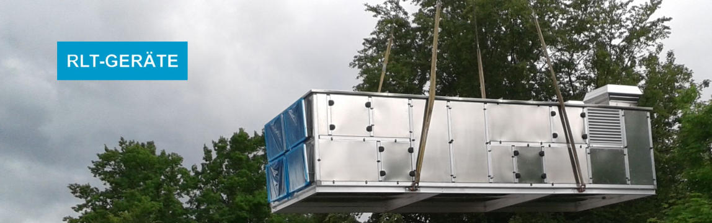

Luftbehandlung seit 1962
Bessere Luft.
Präzise
gedacht.
KAUFMANN Klima-Systeme nennt über 60 Jahre Erfahrung in Luftbehandlung sowie individuell konzipierte Lüftungs- und Klimageräte.
Systeme entdecken ↓Sondergeräte, RLT-Geräte, Split-Kälte, EC-Ventilator-Multi-Fan, Luftreinigung und CO₂-Ampeln sind öffentlich dokumentierte Themen des Unternehmens.

Systeme
Kein Standard von der Stange.
Die Website beschreibt Sondergeräte in geforderten Leistungen und Abmessungen sowie die Auslegung nach dem jeweiligen Verwendungszweck. Das Konzept macht diese Spezialisierung klar lesbar.
RLT-Geräte
Split-Kälte
EC-Ventilator
Multi-Fan
Firmengeschichte
Sechs Jahrzehnte Luftbehandlung.
Kontakt
Technik
besprechen.
Die öffentlich veröffentlichten Kontaktwege sind im Konzept klar eingebunden. Ansprechpartner und konkrete Anfrageabläufe werden vor Veröffentlichung abgestimmt.
Telefon+49 (0) 7121 / 880581
AdresseArbachtalstr. 17
72800 Eningen unter Achalm
72800 Eningen unter Achalm
E-Mailinfo@kaufmann-klimasysteme.de
Gerne stimmen wir die Details in einem persönlichen Gespräch mit Ihnen ab.
Unverbindliche Anfrage
Lassen Sie uns
ins Gespräch kommen.
Schildern Sie kurz Ihr Anliegen. Über „Anfrage per E-Mail vorbereiten“ öffnet sich Ihr E-Mail-Programm mit der öffentlich angegebenen Geschäftsadresse als Empfänger.